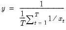

@hmean Basic Statistics Harmonic mean. Computes the harmonic mean of the elements of x. Syntax: @hmean(x[, s]) x: series, vector, matrix s: (optional) sample string or object when x is a series and assigning to a series Return: number The harmonic mean is calculated as  For series calculations, EViews will use the current or specified workfile sample. Examples If x is a series of length 4 with elements 1, 2, 4, and 4, then = @hmean(x) returns 2 (= 4 divided by 2). Cross-references See also @mean, @gmean, and @trmean.